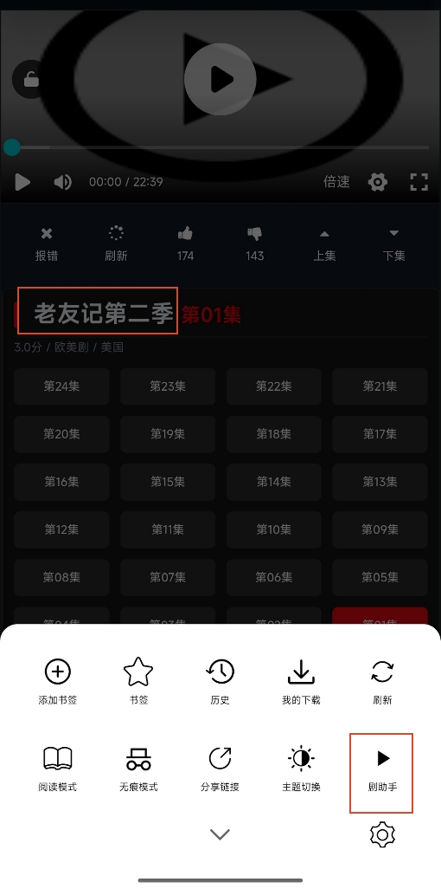
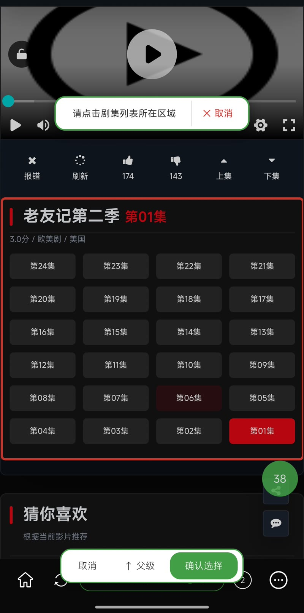
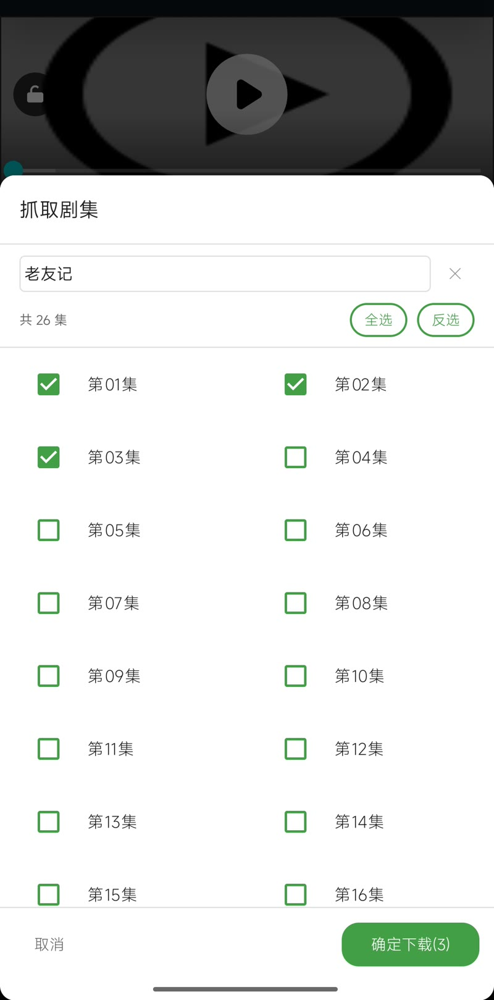
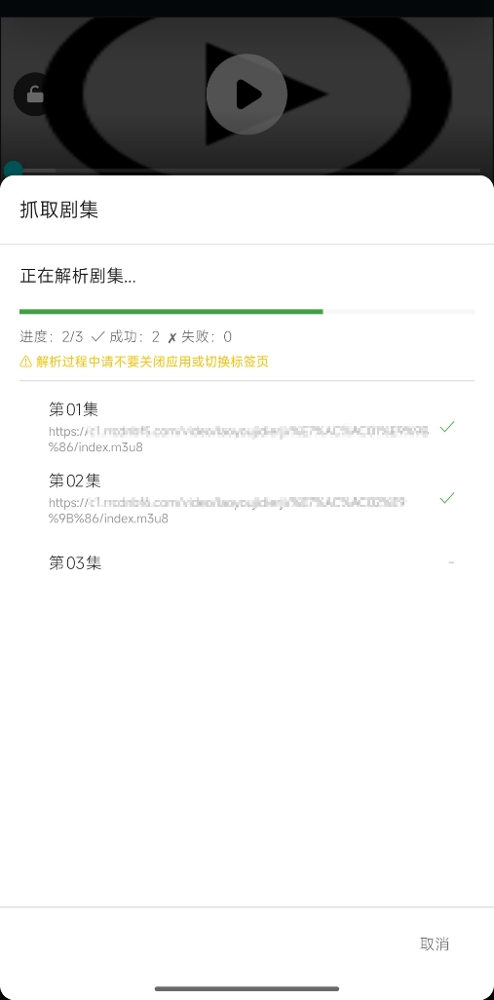
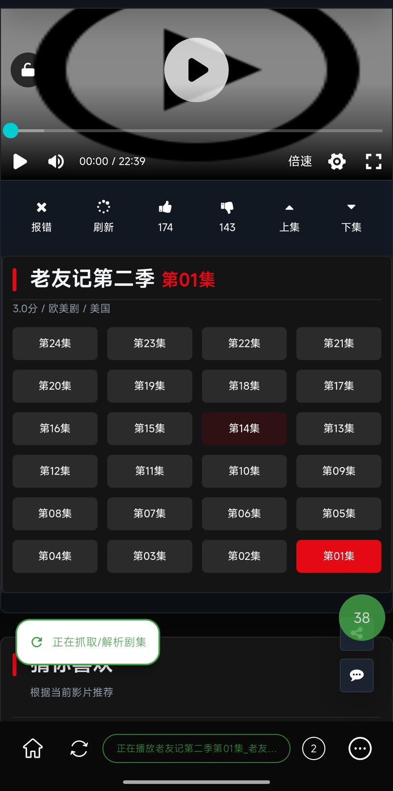
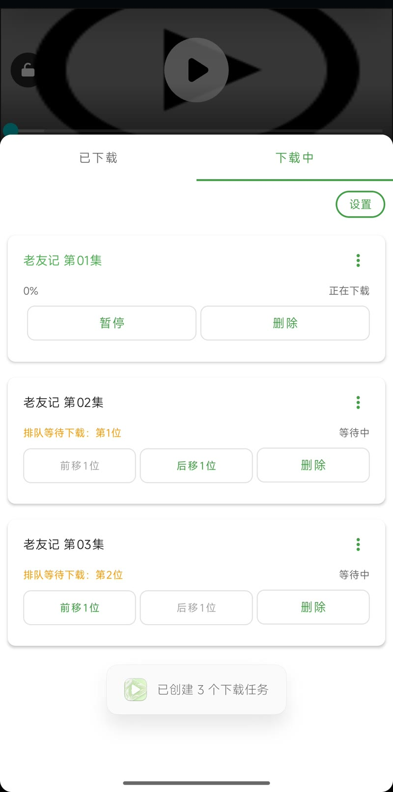
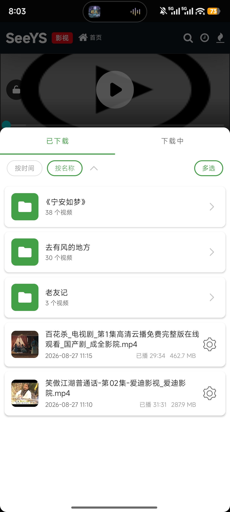
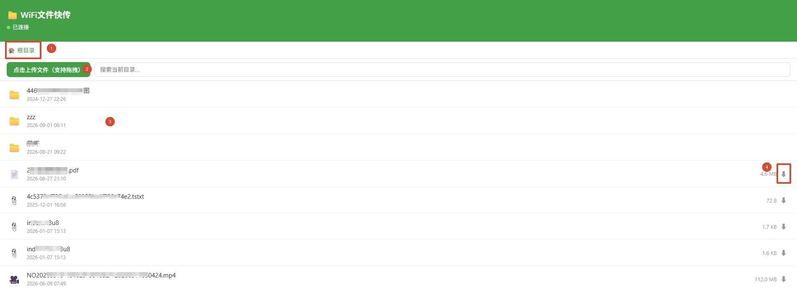

一、软件概述
1.1 软件简介
有风无界APP 是一款基于 Android 平台的流媒体浏览器工具， 主要功能：多标签浏览器、视频嗅探、在线播放、多线程下载、边下边播、广告拦截、隐身模式、无痕模式、阅读模式、视频投屏、文件互传等。
1.2 运行环境
| 项目 | 要求 |
|---|---|
| 操作系统 | Android 7.0 (API 24) 及以上 |
| 硬件要求 | 建议 2016 年后发布的手机，过旧设备可能无法正常使用 |
| 存储空间 | ~46MB 以上（含安装包与运行缓存） |
| 网络要求 | 支持 WiFi / 移动网络 |
1.3 功能总览
| 功能模块 | 核心能力 |
|---|---|
| 多标签浏览器 | 多标签管理、书签、历史记录、无痕模式、标签持久化、第三方网站拦截、第三方APP拦截、右键功能 |
| 广告拦截 | 网页广告过滤（EasyList/EasyPrivacy） |
| 视频嗅探 | 自动识别网页中的音视频资源，支持 M3U8 / MP4 等8种常见音视频格式 |
| 剧助手 | 追美剧、追韩剧、追日剧，一键采集剧集，自动分析视频链接，一键创建下载任务，爽到飞起~ |
| 专属播放器 | 基于 ExoPlayer 定制，超多细节优化，手势、倍速、选集、片头/尾跳过、全屏、小窗，精心打磨，惊喜不断！ |
| 视频下载 | 多线程下载，完全不限速！下载速度的上限，取决于你的宽带上限~ |
| 边下边播 | 下载等不及？立即就能播，进度实时更新，优先播放本地源 |
| 小窗播放 | 大小任意调，位置随便拖，上层播放！回微信、逛淘宝完全不耽误追剧，无缝衔接 |
| 投屏 | 电视安装配套PC投屏软件，一键投屏，自动播放；PC端打开浏览器，粘贴投屏地址，立即播放；支持切换选集 |
| 阅读模式 | 网页正文提取，多主题阅读 |
| 书签与历史 | 书签管理、浏览历史、最近搜索 |
| 文件快传 | 手机、电脑 互传文件，轻松便捷！无需数据线，同WiFi文件传输，速度比U盘还快，一键开启 |
| 隐身模式 | 浏览器记录怕被看到？一键隐藏所有使用痕迹，随便看！用完一键恢复。酷不酷~ |
| 意见反馈 | 有任何使用问题或者功能建议，都可以通过在线工单反馈~/td> |
二、安装与启动
2.1 安装方式
下载 APK 安装包后，在 Android 设备上点击安装包，按系统提示完成安装。安装完成后桌面出现"有风无界"应用图标。
2.2 启动与首次运行
点击桌面“有风无界”图标启动应用。首次使用时请阅读并同意隐私政策后，点击同意并继续，进入应用首页。


图1：启动 & 隐私政策
三、首页与快捷入口
3.1 首页界面
首页自上而下：应用信息、搜索框、常用功能、推荐卡片区。推荐卡片支持自选、排序、随意配色，好看又实用。

图2：首页
固定卡片：
- 在线影院
- WiFi文件快传：手机、电脑 互传文件，轻松便捷！无需数据线，同WiFi文件传输，速度比U盘还快，一键开启
- 隐身模式：浏览器记录怕被朋友看到？一键隐藏所有使用痕迹，随便看！用完一键恢复。酷不酷~
其余功能卡片（书签、历史、下载等）可通过“+模块管理”按钮添加，长按可调整顺序、更改颜色等。

图3：推荐卡片添加 / 管理界面（点击"+"后的选择弹窗）
3.2 隐身模式
谁懂啊~ 浏览器记录被朋友看到的尴尬？ 一键解决！！！
点击 "隐身模式" 卡片开启。
隐身模式下，隐藏所有使用痕迹（书签、历史记录、搜索记录、下载记录等），退出隐身模式后恢复全部数据。


图4：隐身模式说明 / 确认弹窗，以及开启后的首页指示状态
- 退出隐身模式：更多设置 > 隐私与安全 > 退出隐身模式，点击此按钮一键退出！
3.3 底部导航
底部固定导航工具栏：首页、刷新、搜索框、多标签、更多
点击 "更多" 展开全部工具栏，包含10个常见功能菜单、隐藏工具栏按钮、以及右下角“更多设置”

图5：底部固定导航工具栏 > 更多
四、搜索与浏览器
4.1 搜索与搜索引擎
点击“搜索框”弹出搜索对话框
支持输入：网址 或 搜索关键词
内置必应、夸克、Yandex、Yep、神马、百度、360、搜狗共 8 个搜索引擎，可任意切换；搜索关键词自动记录，可一键清除。

图6：搜索对话框（含搜索引擎切换栏与最近搜索记录）
4.2 多标签浏览
浏览器支持同时打开多个标签页：
- 新建标签：1.点击 ⊕ 新建空白标签；2.网页中长按菜单中，点击 “新标签页打开”
- 域名跳转提示：为了安全，禁止跳转第三方App；禁止跨域直接跳转到其他网址，会弹出安全提示让用户自行选择跳转还是不跳转（谨防恶意网站自动跳转广告/病毒网页）


图7：浏览器网页 图8：多标签面板
4.3 网页长按菜单
在网页中长按链接、图片或文字，弹出上下文菜单，支持在新标签页打开、复制、下载、阅读模式等操作。

图9：网页长按右键菜单效果
4.4 网页广告拦截
基于 EasyList、EasyList China、EasyPrivacy 广告过滤规则，拦截常见广告请求并隐藏广告元素。
需在 更多设置 > 隐私与安全 > 广告拦截 手动开启！


图10：同一网页 顶部广告 拦截前后效果
4.5 视频自动嗅探
自动识别网页中的m3u8/mp4等音视频资源，跳转专属定制播放器播放，支持9种常见格式


图11：视频嗅探浮动按钮及嗅探到的资源
4.6 阅读模式
文字类网页支持阅读模式。
点击 "更多 → 阅读模式" 进入纯净阅读界面，自动过滤广告与无关元素，支持主题切换、字号调节等。

图12：阅读模式界面
五、专属播放器
5.1 播放器界面
1.嗅探到音视频资源后，自动跳转至播放器。
2.返回后，点击嗅探按钮（资源嗅探-网络；已下载-本地）跳转至播放器。
3.已下载弹窗内，点击已下载视频，跳转至播放器。

图13：视频播放器全屏界面
5.2 手势控制
| 手势 | 操作 |
|---|---|
| 单击 | 显示 / 隐藏控制栏 |
| 双击左侧区域 | 快退（默认 10 秒，可在播放器设置中改为 5/10/15/30 秒） |
| 双击中间区域 | 暂停 / 播放 |
| 双击右侧区域 | 快进（秒数同左，可在播放器设置中自定义） |
| 长按 | 当前播放速度的 2 倍速播放，此时上滑可锁定倍速、下滑可恢复 1 倍速 |
| 左右滑动 | 快进 / 快退 |
| 左侧区域上下滑动 | 调节屏幕亮度 |
| 右侧区域上下滑动 | 调节媒体音量 |
| 全屏：中部区域上下滑动 | 切换上一集 / 下一集，滑动时有切换渐进提示 |
5.3 播放控制
- 倍速：0.5x / 0.75x / 1x / 1.5x / 2x / 2.5x / 3x 共 7 档可调
- 选集：播放列表切换（在线资源或已下载文件）
- 跳过片头/片尾： 单击：当前播放位置标记为片头/片尾，自动跳过片头、播至片尾自动切集；长按：清除片头/片尾
- 设置快进/退秒数：时长可设置 1 - 60s 任意数
- 播放锁定：锁定后隐藏控制栏，防止误触
- 播放进度记忆：自动记录播放进度，再次播放自动续播
- 镜像播放：支持左右镜像播放切换


图14：倍速、播放列表、片头/片尾
5.4 小窗(悬浮窗)播放
边追剧边回微信！边追剧边逛淘宝！......
点击"小窗"按钮，视频缩小为可拖动小窗悬浮于屏幕上（首次打开会提示开启系统“在其他窗口上层显示”的权限）
小窗可自由拖动调整大小，也可以随意拖动到屏幕任意位置，支持暂停/播放、上一集/下一集、长按倍速等


图15：小窗播放
5.5 投屏
投电视！投电脑！一键投屏：局域网HTTP + SSDP DLNA设备发现，轻松将手机内容投射到大屏
确保手机与电脑/电视在同一局域网内，点击 "投屏" 按钮，软件自动启动本地投屏服务并复制访问地址
电视可以安装配套PC投屏软件，一键投屏，自动开始播放！
PC端可以打开浏览器，手动输入投屏地址，直接播放！
支持播放列表切换！


图16：投屏控制弹窗 图17：电脑浏览器中播放
5.6 边下边播
下载等待时间长？
在下载中弹窗内，找到下载中的任务，点击“更多”按钮，选择“边下边播”
播放器将已下载分片走本地、未下载分片走网络，无缝衔接播放，下载在后台持续追赶；
播放页标题实时显示"已下载xx%"，下载完成后自动无缝切换为完整视频。


图18：边下边播按钮 图19：边下边播播放界面
六、嗅探 & 下载
6.1 自动下载和手动下载
- 自动下载：自动识别到网页中的音视频后，会跳转到专属播放器！
这时若勾选了播放列表下方的“视频加载成功后自动提示下载”，则每个视频第一次加载成功后，会自动弹出下载提示窗。 - 手动下载：在播放列表中，每个视频右侧有一个下载按钮，点击此按钮，弹出该视频的下载提示窗
在下图视频下载提示窗内，修改确认下载信息，点击“确定下载”即可开始下载。

图20：视频下载提示窗
6.2 下载能力
- 多线程下载： 支持多线程下载的资源，可自由调整线程数 2 ~ 128 可配置，并具备自适应并发与域名限流经验优化
- 加密支持：AES-128 加密视频自动解密
- 广告过滤：关键词 + 统计分析 + 广告指纹三重检测，自动剔除广告片段
- 断点续传：支持暂停 / 恢复，网络中断自动暂停，恢复后自动继续；App被杀死，重启后自动恢复下载
6.3 下载设置
在“我的下载 → 下载中”标签，点击“设置”
- 可配置下载线程数，设置即时生效。
- 开启“仅 WiFi”，防止消耗流量产生费用；WiFi断开自动暂停，恢复后自动继续

图21：下载设置弹窗
6.4 下载管理
下载管理面板，分为"下载中"与"已下载"两个标签页。
- 下载中： 显示任务进度、下载速度、预计剩余时间，支持暂停/恢复、删除、下载顺序排队、复制标题、复制链接等等
- 已下载：详见下一章：七、已下载

图22：下载中列表（含进度条、速度、暂停 / 恢复按钮）
七、已下载
“已下载”标签页，显示已下载文件列表，支持功能：
- 缩略图：自动生成视频封面，根据播放进度更新缩率图
- 排序：按名称自然排序 / 时间排序
- 播放：点击直接进入播放器
- 批量操作：多选后批量删除、批量改文件夹
- 长按菜单/更多菜单：设置分组、删除、复制下载链接、重命名、修改后缀、重新下载、拷贝至..
- 分组/文件夹：可以将已下载的资源按文件夹分组


图24：已下载列表 图25：多选批量操作
八、剧助手
追美剧、追韩剧、追日剧、追泰剧，是不是烦透了一集一集的下载！
救星来了！！一键采集剧集，自动分析视频链接，一键创建下载任务，爽到飞起~
8.1 打开剧助手
在浏览器中打开包含剧集的网页，点击底部工具栏的"更多"按钮，在弹出的菜单中选择"剧助手"进入功能。

图26：浏览器底部工具栏 > 更多 > 剧助手
8.2 选择剧集区域
进入剧助手后，系统会自动进入“选择区域”模式。
- 选择元素：点选“任意一集”自动识别剧集列表所在区域，被选中的区域会显示红色边框，高亮显示
- 扩大范围：如果没选中全部剧集，点击"↑ 父级"按钮，可以扩选
- 确认选择：确认选区正确后，点击"确认选择"按钮
- 取消：点击"取消"按钮，退出剧助手

图27：选择剧集区域
8.3 剧名 & 选集
确认选择后，自动抓取剧集名称等信息，并弹出“抓取剧集”弹窗，支持以下操作：
- 剧名：可修改剧集名称，作为下载后的文件名和分组名
- 全选/取消全选/反选：可任意选择要下载的集数，支持全选、反选等
- 确定下载：点击"确定下载"按钮，开始解析选中的剧集

图29：剧名 & 选集
8.4 解析下载链接
确定剧名和选集后，进入解析界面，会对选中的每一集进行只能解析。解析过程会显示进度信息：
- 解析进度：显示当前解析进度，包括成功和失败数量等
- 解析状态：每个剧集显示解析状态（✓ 成功、✗ 失败、⟳ 解析中）
- 取消解析：点击"取消"按钮会弹出退出确认，确认后退出剧助手
- 最小化/恢复：点击外部遮罩区域或按返回键，会最小化窗口；左下角自动出现泡泡条，点击可恢复窗口
注意：解析过程中，不要推出APP，否则可能导致解析内容丢失


图30：正在解析剧集 图31：最小化泡泡条
8.5 下载 & 分组
全部解析完成后，自动创建下载任务。弹出下载弹窗，可以看到下载进度等。
- 批量下载：自动创建下载任务，并自动打开下载弹窗，可查看下载进度
- 自动分组：下载完成后，自动根据剧名分组（文件夹），方便播放


图30：自动创建下载任务 图31：自动按剧名分组
九、书签 & 历史
"书签"和"历史"在同一弹窗内的两个标签页。
书签：添加书签、书签列表、搜索书签、复制分享、删除
历史：自动记录浏览器访问历史，双列网格展示标题、网址、时间等；可搜索历史；可单条删除；可清空全部；无痕模式不会记录


图33： 书 签 页 图34：历史记录
十、WiFi 文件快传
点击首页"WiFi 文件快传"，打开文件互传功能！局域网内【手机与电脑】文件互传，无需数据线，速度比U盘还快：
- 确认【手机与电脑】连接的是同一 WiFi
- 首次打开，点击"选择目录"，指定【手机上】要共享的文件夹（建议创建一个新文件夹，更安全）
- 启动服务！
- 在电脑（或其他设备）浏览器打开地址，即可浏览、上传、下载文件


图35：文件快传面板 图40：电脑访问界面
十一、意见反馈
“更多设置 → 意见反馈”提交反馈
“更多设置 → 我的反馈”查看已提交工单
点击工单查看详情及进度等，可随时查看回复或关闭工单


图36：意见反馈提交 图37：我的反馈工单列表 图38：工单详情
十二、更多设置
首页"设置"按钮 或 "更多 → 设置"打开设置面板，主要设置项如下：
| 设置项 | 说明 |
|---|---|
| 默认起始页 | 打开浏览器/新建标签时，打开的初始页（默认：空白标签页） |
| 启动设置 | 开启后，APP启动时自动打开上次关闭时正在浏览的网页（默认：APP启动时打开首页） |
| UA标识 | 切换浏览器UA标识（Android/PC/iPhone/iPad）适配网页（默认:Android） |
| 强制页面缩放 | 允许在网页中通过手势强制缩放页面 |
| 智能预加载网页 | Webview自带功能，根据用户习惯智能预加载网页，优化使用体验 |
| 加载超时时间 | 设置网页加载超时时长 |
| 隐身模式 | 进入 / 退出隐身模式 |
| 广告拦截 | 开启 / 关闭网页广告拦截功能 |
| 清除缓存 | 清理应用缓存数据 |
| 清空历史记录 | 删除全部浏览历史（不可恢复） |
| 意见反馈 | 进入意见反馈提交页 |
| 我的反馈 | 查看已提交的反馈工单 |
| 关于我 | 查看软件版本与相关信息 |
| 检查更新 | 查看APP当前版本；检查是否有新版本；开启 / 关闭自动检测更新 |
| 恢复默认设置 | 将本APP所有设置重置为默认值 |

图38：更多设置
主题切换：首页主题按钮、"更多" → 主题切换；支持浅色 / 深色 / 跟随系统三种模式。

图39：主题切换
十三、常见问题
在下载中 > 设置面板，可修改下载线程数，可显著提升速度；APP也会根据网络情况，智能优化最佳线程数！
智能过滤主要针对推广内容片段，正常情况下不影响正片播放。如出现误过滤，可在设置中关闭或通过"意见反馈"告知我们。
智能过滤的算法，作者会根据反馈情况持续更新！！！所以您的反馈，可以会帮助更多人享受无广自由~
电视可以安装配套PC投屏软件，一键投屏，自动开始播放；PC端可以打开浏览器，手动输入投屏地址，直接播放
视频保存在APP私有存储目录，可在"我的下载 → 已下载"中查看、播放与操作。
在"下载 → 下载中"点击正在下载的任务更多菜单，点击"边下边播"即可。
普通浏览供您日常使用！
若遇到女朋友突击检查浏览器记录！一键开启隐身模式，自动隐藏所有使用痕迹（书签、历史、下载等全隐藏）用完一键恢复
十四、关于
本软件著作权归 ZiroXin 所有。
用户在软件使用过程中，如遇到软件相关问题，可通过APP内“意见反馈”模块提交工单，作者看到后及时回复。